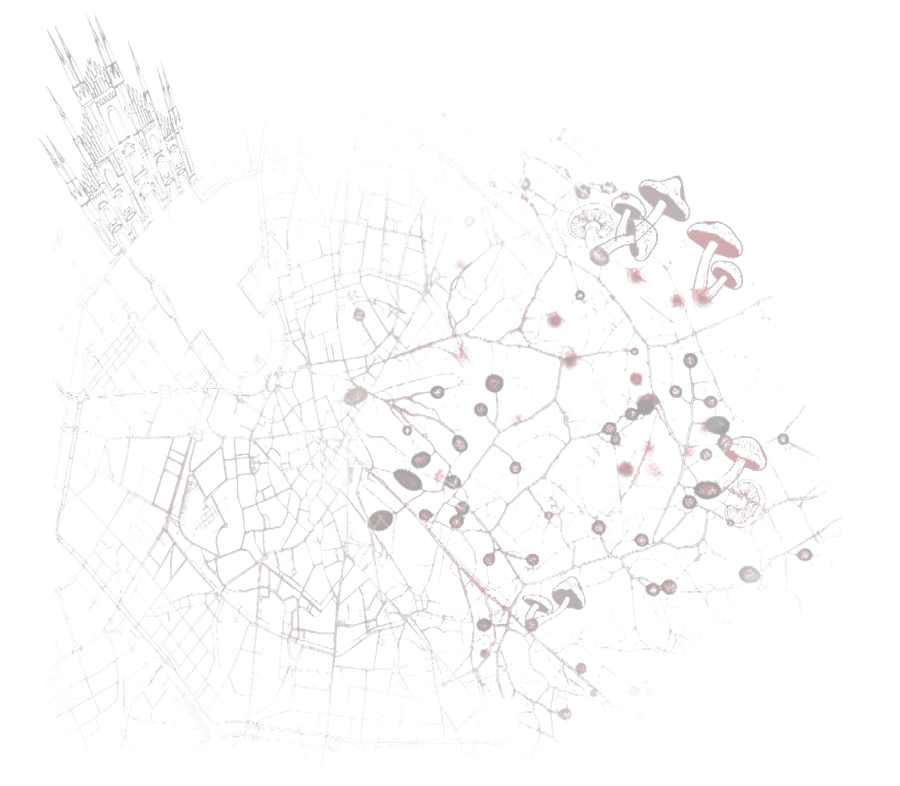
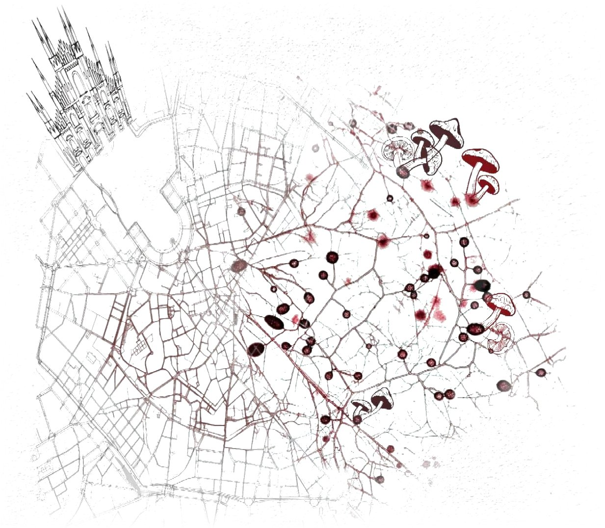
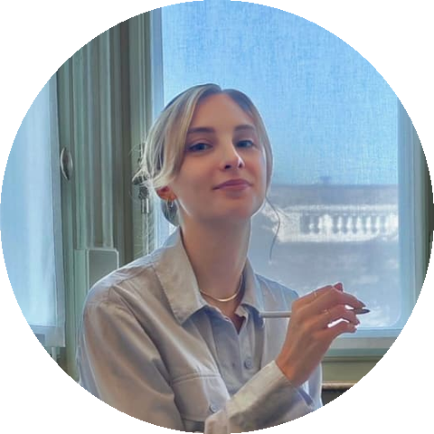
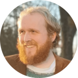
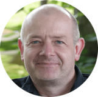

Process Metaphysics and Biology
Three days of summer school followed by a two-day workshop at the Università degli Studi di Milano: interdisciplinary research on what it means for a living system to be one thing that persists through change.
Lectures and reading sessions for around 25 advanced students and early-career researchers.
About the summer school → 9th–10th September · Workshop Ongoing Processes and Biological IndividualityTalks by ten to twelve researchers in process metaphysics and the philosophy of biology.
About the workshop →Why process, why biology?
Process metaphysics takes becoming rather than being as fundamental: what there is are not static things that happen to change, but ongoing processes that may, under certain conditions, stabilise into something we count as an individual. Living systems are the hardest test for this view. Organisms persist by constant turnover of their matter, they begin and end gradually, and many of them (lichens, colonies, holobionts) blur the line between one individual and many.
The 2027 edition of our series brings both strands together. The summer school introduces the central positions in process metaphysics and in the debate on biological individuality; the workshop then asks how far a process view can account for the individuation, persistence and boundaries of living systems.
Milan 2027 is the fifth edition of our series of summer schools and workshops in northern Italy, which began in 2019 in Imperia with Temporal Continuity. The most recent edition, Process Metaphysics in Turin 2025, already brought biology into the discussion; Milan 2027 makes it the central theme.

Organising team
Both events are organised by the Chair of Theoretical Philosophy at the University of Siegen.



We thank Prof. Giuliano Torrengo (Università degli Studi di Milano) for the collaboration and for hosting both events in Milan.